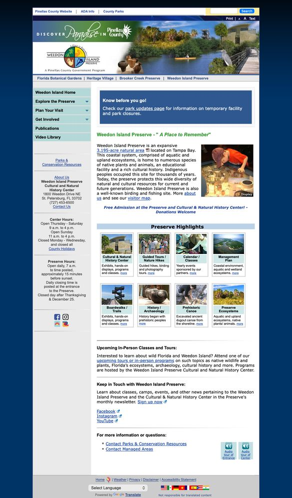
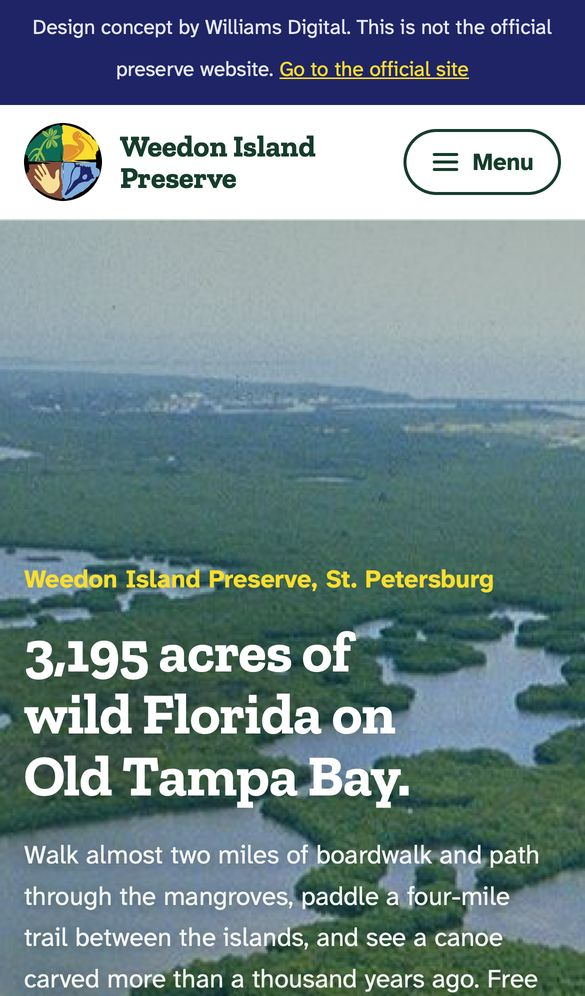

Prepared for the Weedon Island Preserve Cultural and Natural History Center and Pinellas County Parks and Conservation Resources
Prepared for the Weedon Island Preserve Cultural and Natural History Center and Pinellas County Parks and Conservation Resources
A new website for Weedon Island Preserve
This concept was built from the preserve's own words, photos, hours and October programs. It shows what the site could do for visitors, and how little work it would take for staff to keep it current.
Today's site and the concept, on the same phone
The home page on an iPhone 13, today and in the concept.


What the new site does
Answers "what time do you close today?"
The preserve closes about 15 minutes before sunset, so the answer changes every day. The concept works it out from today's sunset and shows it at the top of the home page, next to whether the Center is open and when the next high tide is for paddlers.
Meets the federal accessibility standard
The Department of Justice's ADA Title II rule asks state and local governments serving 50,000 or more people to meet WCAG 2.1 AA on their websites by April 26, 2027. Pinellas County is in that group.
All seven concept pages pass an automated WCAG 2.1 AA check with no issues. The body typeface, Atkinson Hyperlegible, was designed by the Braille Institute for readers with low vision.
Works on every phone
Every page reflows to the screen it's on, from a small iPhone to a desktop monitor. Directions, calling the Center, registering for a program and adding it to a calendar each take one tap.
Easy for staff to keep current
Each month's programs live in one short list: title, date, time, description and registration link. Update the list, and the home page, the events page and the calendar downloads all update with it. Programs that have passed move to "Earlier this month" on their own.
Side by side
Checked on October 14, 2026.
| Today's site | The concept | |
|---|---|---|
| On a phone | A fixed-width desktop page, shrunk to fit | Built for phones first, readable without zooming |
| Automated WCAG 2.1 AA check, home page | Flags images with no text description, no declared page language, an unlabeled search box and low-contrast text | No issues found, on all seven pages |
| Closing time | "Approximately 15 minutes before sunset" | Today's actual time, worked out from the sunset |
| Tides for paddlers | "Check a tide chart" | Today's predicted tides from NOAA, on the page |
| Programs | One long list on its own page | Next four on the home page, filters, add to calendar, past programs tucked away |
| Audio tours | Links that open the MP3 files | Players that work right on the page |
What stays the same
- The Weedon Island logo, and the colors of its four quadrants
- Every page of content, in the preserve's own words
- The registration links staff already use: Explore Pinellas, Eventbrite and RunSignup
- The newsletter sign-up, GivePulse, the PDFs and the audio tours
- The web address. The new site can run as plain files on the server the site uses today, or as a theme on the County's WordPress.
This concept was created independently
Williams Digital made it for the Center and the County to look at. No obligation or commitment is required, and you're welcome to share it with anyone at the County. The photos are the County's own, from its website.
Who made this
Dylan Williams is an Alabama-based developer, Auburn University Computer Science Engineering graduate, and technology professional with more than 10 years of experience supporting large-scale productions, digital platforms, and user experiences.